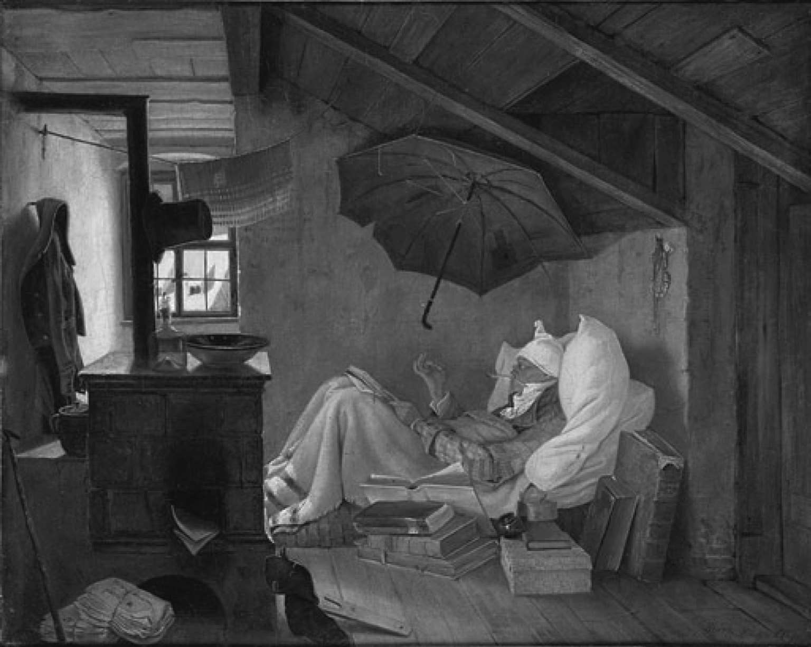
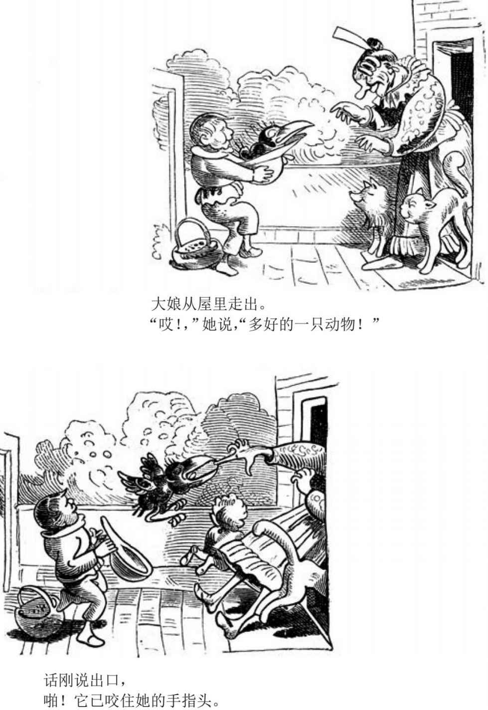
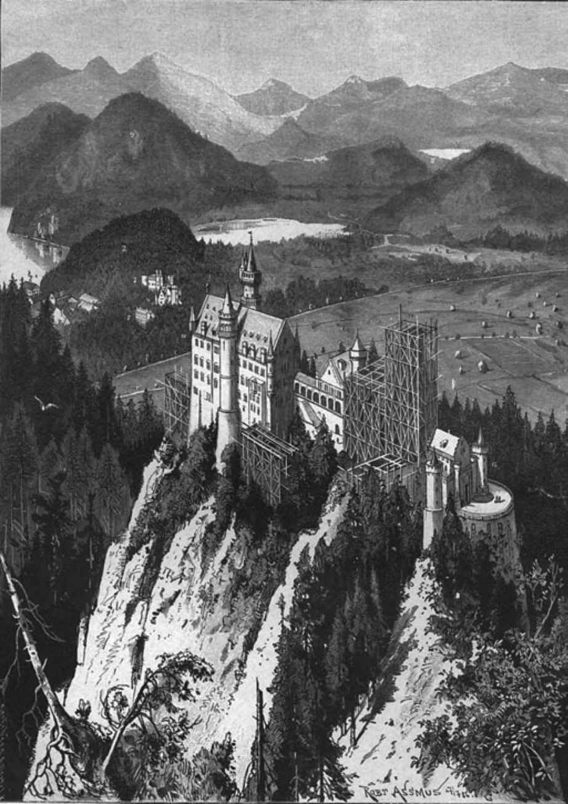

在1830和1848年两次法国革命之间，德国作家必须在两条不同的战线上战斗，从而界定自己。他们不得不抵制（或接受）他们的统治者为了阻止法国的影响东扩而采取的镇压和审查制度。他们不得不同意（或拒绝）继承因贝多芬、黑格尔和歌德的去世而告一段落的文化硕果累累的伟大时期的遗产。但是在这场战斗中谁是敌人？是压制他们的君主专制和官僚主义吗？可是毕竟前两代人的伟大思想已经融入其中。与之为敌意味着要和已经被专制主义时代排除在政治权力和重要文学活动之外的资产阶级站在一起。还是说，敌人就是资产阶级本身？长期的不参与者，理应被讥讽为“市侩”（这是大学生的俚语，当时的含义通常等同于“对精英艺术无动于衷”）。与之为敌意味着要完全抽离出在法国和英国最能代表经济、技术和政治现代化的阶层。因此，这个时代属于不情不愿的资产阶级和不满或失败的官员，他们选择接受传统，但要颠覆传统对自己成果的理解。
在哲学方面，与过去的双重矛盾关系非常明显。在德国，继观念论的前辈之后主宰新时代的哲学家是一群物质论者，不同于前辈们的依附，他们要求的是社会自治权。新的思想领袖在国家机构之外贯彻自己的道路。阿图尔·叔本华（1788—1860）依靠其父作为银行家的商业收益过着长期的半退休生活。路德维希·费尔巴哈（1804—1872）的事业大部分受到其妻所有的一家瓷器工厂的支持。卡尔·马克思（1818—1883）的晚年可以依靠从曼彻斯特纺织厂赚取利润的弗里德里希·恩格斯（1820—1895）一家的资助。弗里德里希·尼采（1844—1900）同样获得了原先在英国积累的家族遗产的支持，当他的妹夫在巴拉圭因一次古怪的殖民冒险而破产时，他也没有失去这份遗产。此外，随着人们读写能力的提高，出版业和新闻业蓬勃发展（柏林、莱比锡和斯图加特的书店数量在1831至1855年之间增加了一倍多），这给马克思等人，尤其是激进的宗教作家达维德·弗里德里希·施特劳斯（1808—1874）提供了荷尔德林和克莱斯特无缘得到的成为文学自由职业者的机会。1830至1914年，德国开始拥有特征明显的资产阶级知识分子阶层，足以媲美当时的法国和英国。这一阶层明显属于资产阶级，但阶层成员们并不总是乐意如此。其中的每一个思想家开始都想成为大学教授，后来却偏离方向，或被阻止实现梦想。在柏林，叔本华与黑格尔在授课的直接竞争中失败，松了口气放弃了大学生活，但他从不原谅学院派哲学家（讲坛哲学家）的名望和影响。
施特劳斯被解除了在图宾根的教职岗位，因为他于1835年出版了解构性的《耶稣传》。他受聘于苏黎世大学神学院教席的时候，苏黎世爆发了（纸面上的）内战，让他登上了每一所大学的永久黑名单。1842年，布鲁诺·鲍威尔（1809—1882）因为出版了对《新约》的批判作品而失去了在波恩的职位。他的年轻门徒卡尔·马克思也随之不得不放弃自己的学术雄心，转而投入新闻业。费尔巴哈多年来一直期望得到一个哲学教席，但在备受争议的《基督教的本质》于1841年出版并获得爆炸性的成功之后，他不得不承认那是不可能实现的。尼采猛烈抨击19世纪70年代德国文学界的老大哥施特劳斯，却和他一样对学术界嗤之以鼻。尼采作为巴塞尔大学古典学教授出版的第一部作品《悲剧的诞生：源于音乐的灵魂》（1872）促使他决然地疏远了学术界。和当时也被他轻视的叔本华一样，尼采最终从大学退休，陷入领取养老金的孤立境地。
因此，这一代的哲学家并不是简单地拒绝他们所继承的遗产，而是冷漠地将之视为对已经改变了的世界无关紧要的东西。他们的反应略带苦涩，附带着一种好斗的渴望，想要在新的背景下实现旧的目标，有时又是无奈的选择。与其说是拒绝，不如说是对过去有意识的颠覆。主要的大人物们强调让人的思想力量服从于某些先验原则：叔本华的意志、费尔巴哈的知觉、马克思的阶级利益、尼采以这种或那种形式表达的以上三者。这些截然不同的作家的共同之处在于，他们存心推翻从莱布尼茨到黑格尔的德国哲学赋予思想或“理性”的首要地位，他们都把这种反叛表现为对德国古典哲学中一种普遍存在的关系的逆转。对这个原则最精确的表述正好出现在马克思和恩格斯的《德意志意识形态》里，这部手稿创作于1845 至1847年间（1932年出版），但是换作叔本华、费尔巴哈或尼采，也很容易写出同样的话：
然而，既然德国古典哲学认为“意识决定生活”不是真的，那么其接班人的信念，即他们正在颠覆以前的东西，也不是真的。但是逆转的想法让他们都付出了巨大的情感，逆转的言辞在他们的作品中无处不在。像往常一样，反叛表象的背后隐藏的爱和愤怒同样强烈。对逆转的要求实际上是对连续性的要求，但同时也表达了一个愤怒的认知：历史的变化使得单纯的连续性变得不可能。
这些年的文学中存在一种与过去更为微妙的矛盾关系。海因里希·海涅（1797—1856）的诗歌和散文贯彻着一条坚定的信念：他已经经历了“‘歌德审美时代’的终结”，进入了一个产业主义、共产主义和德国革命即将来临的时代。然而，他作为诗人第一次也是最持久的成功是由诗集带来的，它们第一眼看上去像是由歌德和当时的其他著作，尤其是《男童的奇异号角》的抒情和民歌风格提炼而成的（《歌之书》，1827—1839；《新诗集》，1844）。仔细观察后会发现它们充满着讽刺的（和拜伦风格的）、令人惊讶的元素，一个现代人居然可以蠢到被歌颂爱、自然、诗意之美好的理想主义或浪漫主义的观念所吸引：
但是，或许要做现代人（至少在海涅所处的环境），就要做一个傻瓜，并忍受分裂的忠诚。生活并没有因分裂而少一分真实，当然也不会少一分痛苦：
来自犹太银行家家庭的海涅并不喜欢德国的复辟，在拿破仑解放性的立法被废除后，如果他还想像先前打算的那样成为律师或学者，就必须皈依基督教。1830年的革命吸引了他去往巴黎，他从那里给德国报纸寄送关于法国艺术、文学和政治的报道，同时通过两项不讨好的研究向自己的传统宣战：《论德国宗教和哲学的历史》（1834）和《论浪漫派》（1831—1832）。1835年，日耳曼联邦禁止他和另外一些激进作家的写作，他们被统称为“青年德意志人”。尽管文学收入减少了，但是海涅仍然能依靠一份法国的国家津贴和不时的家庭补贴生活，还能迎娶他的情人，一个没有受过教育的法国女人，他最温暖的诗里有一部分就是写给她的。19世纪40年代，他遇见了同样流亡巴黎的年轻的马克思，并为他的杂志供稿，他的诗歌变成了政治讽刺手段（《德国—一个冬天的童话》，1844）：“关税同盟［……］将给我们‘物质的’统一，精神的统一则由审查办公室提供。”然后他又过渡到历史和犹太主题，采用了更黑暗的色调。
1848年德国“革命”的失败正逢海涅的脊柱结核病发作，在接下来的八年里，他被迫卧床。当他在这个“床垫坟墓”里面对痛苦和死亡时，他对历史的反讽意识变得非常个人化。尽管海涅嘲笑其他的一切，但从不嘲笑他与读者的关系。假如他的读者陷入荒诞—比如试图通过浪漫主义的镜片来看待西装背心和关税同盟的世界，他会确保他们知道他也身陷其中。他凭着记者对公众的尊重写作，他认为自己拥有一群受众的信心说明他脱离了悲惨地受到孤立的知识分子和精英官员的群体，而这个群体却给他和他为之写作的德国提供了文学和哲学传统。
对德国的穷人和被排挤者的同情让格奥尔格·毕希纳（1813—1837）愤怒地拒绝了理想主义的传统。他转而看向先前狂飙突进运动的现实主义，看向歌德的早期作品和《浮士德》里格蕾琴的故事，以及看向伦茨的戏剧。然而他的大部分作品直到1875年的全集出版后才为世人所知，其中萦绕着失去整体性和寻找受苦的意义的感受，似乎需要一个宗教答案，尽管没有被系统地阐述出来。1834年，他出版了一本反叛的小册子，口号是“给茅屋和平！给宫殿战争！”。他被告发后不得不于1835年逃往法国，尽管他因过于难以界定而没有被纳入同一年晚些时候对“青年德意志人”的禁令。为了筹集逃跑的资金，他在五周内写下了一个极富创意的剧本。《丹东之死》在主题上诸多得益于歌德的《埃格蒙特》和莎士比亚的《裘力斯·恺撒》，但它开放的形式则蓄意反对了席勒式历史悲剧目标明确的伦理结构，并回顾了伦茨的《士兵们》。（该剧本全文的第一个出版商觉得他必须通过添加副标题的方式来解释它明显缺乏的结构：《法国恐怖统治的场景》。）该剧将背景设置在1794年3月和4月，从革命演讲中逐字摘录，展示了丹东如何因为嗜睡、自满（“他们永远不敢”）、对继续无意义的屠杀感到厌恶、对自己1792年参与九月大屠杀的行为感到内疚而逐渐陷入被逮捕、提审和处决的命运。不过，丹东慢慢意识到对生活的厌倦、对人类行为动机的冷嘲热讽、轻微的自我主义，甚或还有无神论，都是一种姿态，为了爱情他必须努力地活下去—但为时已晚，历史在继续。该剧的语言极度紧张。但反复出现的活埋景象被本质上具有宗教性质的洞见证明是有道理的：没有从存在到自由或虚无的逃避，存在既是受苦也是爱。
毕希纳来自一个医生家庭，流亡期间在苏黎世大学担任解剖学讲师。他放弃了政治，但没有放弃文学。他的短篇故事《伦茨》和《丹东之死》一样援引了真实的材料—1778年和伦茨共处的奥伯林牧师的日记，具有戏剧所缺乏的形式上的完整。这种冷静但又寄予深刻同情的第三人称叙述方式，在德国散文体作品中并无先例，甚至在歌德和克莱斯特的作品中也找不到。叙述者以一种不带讽刺和技巧的风格表达了伦茨精神错乱的痛苦，但从不介入其中。通过隐喻或对语法的破坏，伦茨意识的发展延续了对行为的冷静的医学记录；内心和外在都可以看见，但两者并不混杂：
在与一位来访学者的交谈中，伦茨表达了他的艺术原则：“你必须热爱人类，才能进入每个个体的特殊本质。”这样的爱—一种太深刻、太广泛的理解，无法仅仅与被爱者相联系—展现在毕希纳的《伦茨》和他的戏剧名作《沃伊采克》之中。《沃伊采克》没有完成，并且没有一个明确的版本，但这并不妨事。毕希纳给这部剧设置了一系列短暂、离散、浓墨重彩的场景，其效果是累积的而非连续的。毕希纳再次在档案材料的基础上撰写故事：一名列兵的医疗报告。他罹患精神错乱，在德国获得第一次请求减轻刑事责任的机会之后，因为杀害自己的情妇于1824年被处决。毕希纳的伦茨说，文学的最高目标是重现上帝造物中的一小部分生命，在《沃伊采克》中，毕希纳向以前的所有悲剧作家都未曾注意过的一个人物赋予了生命，使之成为德语文学（或许是所有非滑稽文学）中第一个无产阶级的主人公。沃伊采克看起来像是每个人的受害者，在军事、社会、经济和性的等级体系中，都处于底层；甚至他的身体也在一场搏斗中受到羞辱，在军医对他进行的饮食实验中，他的地位比豚鼠还低。尽管如此，他把自己的人性保留在和玛丽及他们的孩子组成的小家庭中，直到玛丽和军鼓手的通奸夺去了他的人性，他在愤怒中杀死了她。沃伊采克上级（尤其是医生）的尖刻嘲讽、集市上的可怕场景、对上帝用泥土造人的布道的拙劣模仿，以及一个听起来更像贝克特而非狄更斯（他在1837年开始写《雾都孤儿》）式的宇宙无意义的灰暗寓言，似乎累积成无望的虚无主义。但是，这个剧本产生了相反的效果。由于它在结构上聚焦于中心人物，在语境中精确捶炼主人公的言语和暗示，坚持反抗所有贬低和忽视他的阶级，坚持认为他的苦难和玛丽的苦难是值得关注的（也许是唯一值得关注的），所以这是对爱情力量的一种深入人心的表达和辩护。毕希纳在23岁时死于斑疹伤寒，19世纪的德国失去的不仅是一位文学天才，也是一位道德天才。
19世纪三四十年代，德国经济仍以农业为主，在远离巴黎和都市喧嚣的乡村和小城镇，从18世纪延续下来的社会结构几乎没有受到缓慢发展的现代化的影响。但是，人口及识字率的增长和图书市场的发展是未来变化的预兆，最敏锐的心灵可以感受到，正在让他们的文学生活变得更容易的东西也在让他们脱离歌德及其同辈人栖居的世界，而这世界的外部环境仍然几无变化。爱德华·默里克（1804—1875）和荷尔德林一样在图宾根神学院接受教育，像荷尔德林本该成为的那样做了一名施瓦本地区的乡村牧师，尽管当他的怀疑（也许是被他的神学院同学施特劳斯引发的）和荷尔德林一样让他难以承受时，他做了斯图加特一所女子学校的德语文学教师—当荷尔德林需要之时，无论是这门学科还是这所学校（建立于1818年）都尚未存在。默里克的诗歌，无论是用押韵的德语还是用无韵的古典格律写成的，直到19世纪末在胡戈·沃尔夫的配曲下才广为人知。默里克继歌德、布伦塔诺和艾兴多夫之后创作了精致、冷静和略带幽默的作品。他尽管也喜欢叙事和风俗画场景，但偏爱风景中的自我主题，他的风景通常被认为是德国西南部的风景。默里克的自我像海涅的一样分裂，尽管更加微妙，仍是既和自己也和周围的世界矛盾重重。他的自我不会以象征性的意义穿透风景，甚至缺乏距离或陌生的意义。相反，它自觉地意识到周围的环境，熟悉并喜爱这些环境，尽管它们作为自我的外部边界，是一个不可知或不可表达的内在奥秘的可知入口。诗人沐浴着春光，在山腰打盹，隐约感觉到温暖、光明和朦胧的渴望，唯一清晰的感觉是蜜蜂的嗡嗡声：
观念论的古典时代所宣称的统一不再存在。在物质论的时代，所有的感官印象都是可知的，并且与心灵分割开来，心灵只是不安和健忘的记忆的场所。

图9 《贫穷的诗人》（1839）。作家卡尔·施皮茨韦格（1808—1885）擅长描绘中产阶级的幽默生活场景。这位也许算不上“浪漫主义者”的诗人正在比照身边墙上刻的模板仔细检查他写的六步格诗，但睡帽泄露了他的资产阶级特征
类似的意象和诗歌素材的内部分离依然被安内特·冯·德罗斯特—许尔斯霍夫（1797—1848）沿用，她的作品因而具有鲜明的特征。作为历史悠久的威斯特法伦贵族家庭的一员，她似乎应该和默里克一样在社会属性上属于旧制度。但是，出于不同的原因，她和默里克不同，她不再适合18世纪作家的模式：她是一名天主教徒，也是一个女人，是现代德语文学中第一位伟大的女诗人。与默里克似乎是被动地接受经验的奥秘不同，她力争控制记忆、痛苦和负罪感，却对胜利没有把握。对她来说，古老的过去可能隐藏着不可名状的威胁。熟悉的意象呈现出全新的内涵：山谷中遥远的号角声唤起了失去的青春的勇气，月出之前的阴暗群山像是一个罪恶的审判圈。歌德和席勒诗歌中最著名的一些主题—普罗米修斯、湖、投入海浪的生命之杯—在她晚期的一首诗中被重新阐释为道德惩罚的象征。在一首异乎寻常地（无疑是无意识地）与布莱克异曲同工的诗中，她准确地基于植物学的事实发问道，她是否必须被摧毁，以便让她的诗保留对她所继承的传统的这一纠正，就像蓟花被五倍子虫的幼虫侵噬，而这虫据说能被用作药材：
浪漫主义的主题—二重身、恶魔的暗示、一种与罪行和报应相关的树—贯穿了德罗斯特—许尔斯霍夫最著名的叙事散文《犹太人山毛榉》（1842，这不是她自己起的标题）。但它们没有指向某些其他层面的存在，而是指向一个故事的道德意义。在这个故事中，四个部分无法解释的暴力死亡事件被证明是由于忽视谦卑、诚实、慈善和天主教的宗教实践之类的基本原则而导致的。犹太人团体受到基督教徒邻居冷酷的轻蔑对待，却表现得像是基督教道德基本法的守护者，但它仍然神秘而难以理解。甚至主要人物的身份也是断裂和不确定的。德罗斯特—许尔斯霍夫的生活中心就像默里克的一样，位于任何一个她可以用她继承的文学资源来描述的世界之外，最终有赖于一种后路德宗神学，它将个人身份与一个她不效忠的全能国家相提并论。
女性对男性目的的屈从，或许是无意间成为弗里德里希·黑贝尔（1813—1863）的诗歌和戏剧的主题和象征。他是审美观念论的最后代表之一，试图为新的社会和物质决定论思想发声。他早年在一个情妇的支持下努力写作以摆脱贫困，却对她始乱终弃，然后又依靠他妻子（维也纳最重要的女演员之一）的帮助。《玛利亚·马格达莱纳》（1844）是黑贝尔唯一一部以当代环境为背景的戏剧，描绘了德国小城镇的转型，在那里识字率正在上升，城市化的进程开始了，可是民风的改变还不够快，没能阻止一个未婚母亲因为害怕丑闻而自杀。“我不再理解这个世界”，这是剧本最后一行她对天父的忏悔，该剧启发了后来风行的社会剧，在德国许多剧院大获成功。黑贝尔在巴黎遇见了海涅和德国共产党人，但是政治上他倾向于黑格尔的君主立宪制。1848年的危机之后，他对变化中的世界的反思显然系统地延续了黑格尔带有神学色彩的历史哲学，但女性依然是受害者。在《阿格尼丝·贝尔瑙尔》（1852）中，一个女人自己本身没有过错，却变成开战的导火索，为了人民更大的利益而牺牲。《阿格尼丝·贝尔瑙尔》向喜欢做革命抗争演讲的1848年的激进分子，以及对国家理性持矛盾态度的保守派发出了同等呼吁。然而，国家理性才拥有决定权，尽管政治家们流下了鳄鱼的眼泪：黑贝尔再次捕捉到一个时代的情绪，这是工业化经济繁荣期，此时无论是政治上还是经济上的无耻都被提升为道德原则。“只有一件事是必须的，”他有一次写信给他的情妇说，“世界应该存在，至于个人在其中如何行动，是无关紧要的。”
在生命的最后几年，盛名卓著的黑贝尔遇见了正在老去的叔本华，在残酷的决定论和对普遍痛苦的愤怒中发现了一种契合自己长期以来的信念的哲学。黑贝尔并不孤单。19世纪50年代，在被忽视了几十年之后，叔本华开始在德国知识分子群体中复兴，同时黑格尔主义式微，或转变为马克思主义。叔本华反对将历史和社会理论化，此举吸引了因德国最长久的自由经济扩张而兴起的个人主义。尽管如此，他相信艺术—除了毁灭之外—是被残酷的因果逻辑完全奴役的物质世界里唯一可能的救赎，这个信念也安慰了那些对自己或他人的致富过程持保留态度，却不想放弃财富的人。
不过，并不是每个人都想要得到安慰，或者像黑贝尔那样被束缚在不甚富裕的更早时代的哲学和美学中。从1848年到德意志第二帝国宣告成立的1871年，德国资产阶级最终摆脱了德国官僚的阴影，满怀名利之心，抛弃了传统文化。1855年，路德维希·毕希纳（1824—1899）发表了一篇非常成功的对新科学的总结文章《力与物质》，把观念论哲学整个贬斥为浮夸的胡闹。他编辑了哥哥格奥尔格的文学遗产，却没有一丝兄长的神学和伦理学上的精妙或文学上的敏感。毕希纳堪称他那个时代的理查德·道金斯 [13] ，他断言物质是永恒的，生命从无机的粒子中发展，人类由低等动物演化而来，以及上帝或不朽的一切都是没有科学依据的。一百年的文学和哲学都建立在极其痛苦的妥协之上，这样的日子一去不复返了。诚然，《力与物质》剥夺了毕希纳在图宾根的教席，但作为医生和多产的记者，他有钱享受独立。1859年《物种起源》出版后，毕希纳成为达尔文思想的热心宣传者。人们认为这些思想验证了自由市场的原则，并且是它们的一个表达。商业上最成功的德国诗人之一威廉·布施（1832—
1908）的作品也以自己的方式宣传了达尔文主义。天才的自由艺术家兼绘图师布施采用了海因里希·霍夫曼《蓬头彼得》（1846）的样式，在早期的一系列连环漫画（例如《马克斯和莫里茨》，1865）中把文字简省的诗行和杀伤性的警言式对句结合起来。布施对自命不凡的诗人、伪善的宗教信徒和顽劣不堪的小男孩极尽嘲讽，在一个不道德的世界里只有适者生存，这些都成为德国民族记忆的一部分。
新知识分子自由的经济基础是1855年另一个重大出版成果的主题：古斯塔夫·弗赖塔格（1816—1895）的《借方和贷方》直到本世纪末依然是畅销的德语小说。故事发生在弗赖塔格的家乡，普鲁士工业的发源地之一西里西亚。故事追踪了两个中学同学的生活，他们都是资产阶级成员，都与贵族有冲突，都想要成功立业，一个诚实、正直、努力工作，另一个是犹太人，为人狡诈，向他人放高利贷。反犹主义—本书是德语文学中第一个明显非宗教性的例子—是经济和社会革命的结果，它使得本书得以面世。当德国的犹太人从聚集地走出来时，他们遇到的最顽固的障碍仍然是受到法律或实践的阻挠，不能被国家（包括作为德国传统文化中心机构的大学）雇佣。因此，他们的集体心理代表了一种纯粹的力量组合形式—金钱、商业和自由放任主义，以挑战德国政治和文化生活中官僚的主导地位。
在19世纪的巨大动荡中，对犹太人的敌意表达了德国资产阶级对自身的恐惧，它害怕资产阶级的力量会毁灭三百多年来给予它（从属）身份的专制和官僚国家。因为这种敌对行为本质上是一种非理性的自我仇恨（《借方和贷方》的两个主要人物拥有相同的背景），小说从一开始就表现出怪诞和噩梦的氛围，尽管就1855年来说，真正的噩梦还在遥远的未来。

图10 威廉·布施《汉斯·胡克拜恩》（1867）中的场景，这本书讲述了一只恶毒的乌鸦的故事
如果说“犹太人”的形象代表着德国官员的敌人德国资产阶级，那么在这个国家建设的新时期，出现了一个对两者一视同仁的新概念，这个新概念同时站在它们的对立面：“受教育的市民”—新德国的市民，他（而非她）不是基于经济角色被定义为中产阶级，而是基于他的教育或文化。1867年，在把奥地利最终从德国的政治定义中排除出去的七星期战争 [14] 结束一年后，这个文化国家得到了法律上的承认，保障当代作家生活的版权在涉及十几位德国“经典”作家（以歌德为首）时消失了，因为人们认为他们的作品非常重要，所有的出版商都应该免费出版它们。尽管歌德的私人文件仍未公开，但是这一举措为大学开辟了一片广阔的新天地。随着独立写作成为有利可图的商业行为，官僚机构退到了民族文学编辑和文献学研究的领域。1872年，在俾斯麦通过对法国的战争统一德国各城邦后，它们别无选择，只能加入他的新帝国。先前批评俾斯麦的大卫·弗里德里希·施特劳斯如今成了他的热心拥趸。施特劳斯提出，培养“我们伟大的诗人”（莱辛、歌德和席勒）和“我们伟大的音乐家”（海顿、莫扎特和贝多芬）对新德国的价值远远超过维护既陈旧又难以令人相信的基督教。在《旧信仰与新信仰》一书中，他认为自己的研究已经摧毁了基督教的历史基础，其哲学主张已被现代科学，特别是天文学和达尔文生物学驳倒。剩下的精神需求可以从“艺术”中得到满足。施特劳斯毫不留情地说出了在新统一的德国，资产阶级和国家之间的协议的真相：随着君主们的退位，如今民族“文化”取代了地方性的路德宗的位置。
如果说有哪一位当代艺术家如施特劳斯所理解的那样体现了现代德国文化，那就非理查德·瓦格纳（1813—1883）莫属了，他的歌剧（更甚于黑贝尔的戏剧）真正接替了席勒的戏剧，并且真正实现了18世纪德国对民族戏剧的梦想。瓦格纳本人也把他的作品视为德国文学、哲学和音乐的最佳结合，他个人的职业生涯中汇聚了很多被俾斯麦融入一个国家的矛盾要素。瓦格纳在二十多岁时与青年德意志运动关系密切。1839至1842年在巴黎不愉快的学徒岁月里，他结识了海涅和俄国无政府主义者巴枯宁，了解到马克思和蒲鲁东的社会主义思想，以及费尔巴哈对宗教激进的世俗化。19世纪40年代在德累斯顿歌剧院任乐队指挥期间，他写下了革命的报刊文章，在1849年积极参加了最后失败的德累斯顿地方起义。由于害怕德国警方和债主，接下来的16年里瓦格纳一直在瑞士流亡，他放弃了政治，甚至有段时间放弃了作曲，转向了文字写作。在借鉴了从温克尔曼到浪漫主义的德国前辈们（他们把希腊艺术之完美视为希腊社会之完美的表达，把现代艺术当作教育和改变现代社会的手段）之后，瓦格纳详细阐述了一套理论，主张歌剧继承了希腊古典悲剧，是社会革命的真实工具。1853年他发表了用拟古头韵写就的四部曲歌剧《尼伯龙根的指环》，比起德国的素材他采用了更多古代北欧的素材，展现了一个高度变异的黑格尔主义者眼中的社会发展：先是从自然的状态堕落到权力和财产制度，然后经过个人主义和与爱相反的力量的膨胀（这也越来越多地引发了源于自身的矛盾冲突），直到在世界革命的大火中一切被重塑。然而，瓦格纳对这个庞大事业总谱的谱写在1854年中断了，他发现了叔本华哲学，它论证了“艺术”相对社会拥有形而上的优先权，而音乐又优先于其他任何艺术，这促使他完全走出了政治激进主义。因此他转而创作了《特里斯坦和伊索尔德》（1860年完成），该剧表现了个人是转瞬即逝的，忍受着无休止的渴望。然后瓦格纳又转向一部关于歌剧的歌剧，或至少是关于文字和音乐的歌剧的创作：《纽伦堡的工匠歌手》（1861—1867）。汉斯·萨克斯在剧中被表现为一位信仰叔本华的哲学家兼艺术家（其实就是瓦格纳本人？），通过他智慧的指引，一对情人瓦尔特·冯·施托尔青和埃娃·波格纳走到了一起。他以此让初时傲慢的瓦尔特所代表的贵族和纽伦堡固执的资产阶级工匠艺术家取得和解，瓦尔特后来还被吸收进入工匠艺术家协会。在最后部分，所有的列席者都可以加入萨克斯的终场颂歌，赞扬“神圣的德国艺术”（大约指的是歌剧），它被认为是比德意志帝国更加坚韧的民族团结的纽带。就在瓦尔特与纽伦堡市民联合的同时，俾斯麦也在19世纪60年代摒弃了1848年的议会制，努力促进独裁的和等级制的国家结构与新富起来的中产阶级的联合。1864年瓦格纳的个人生活发生了童话般的转变，时年19岁的巴伐利亚国王路德维希二世宣布他打算消除瓦格纳的一切日常烦扰，让他能够专注于作曲。此举让这位依靠自己的努力成功，也差点被自己毁灭的艺术家成了国家机构的一部分。
《尼伯龙根的指环》完成了（结尾部分变调成叔本华的普遍悲观主义），然而瓦格纳最后的18年古怪而落伍，重复了歌德在革命前时代在魏玛作为二流君主宠臣的日子。不过，这只是再现了施特劳斯同样怪异地分配给18世纪晚期以农业为主的专制主义德国和奥地利的文学和音乐文化的角色：为一个太过现代而不能接受宗教的19世纪工业化、城市化的大众社会提供精神养分。这种文学和音乐诞生的环境与它们当前应该服务的目的之间的不协调，例如瓦格纳表面上的中世纪主题（吸引了路德维希国王）与他的音乐的超现代性之间的不协调，可以通过给这些作品冠以“古典”、“永恒”或“神圣”的“艺术”之名来掩盖。这类艺术又可以反过来掩盖消费它的“受教育的市民”身上不协调的杂合性，新国家的中产阶级只能通过“文化”统一起来。在路德维希的赞助下，瓦格纳建造了一座神圣的德国艺术殿堂—位于拜罗伊特的歌剧院，歌剧院的首场演出是1876年《尼伯龙根的指环》的首次全本演出。为了给神殿“献祭”（他的原话），瓦格纳写下了他的最后一部歌剧《帕西法尔》（1882）。基督教的象征和仪式原本的作用被明确宣布为过时，《帕西法尔》转而服务于叔本华的伦理学。施特劳斯最爱的作曲家是海顿，他认为叔本华“不健康”，可是他为现代德国设想的新的信仰计划却由《帕西法尔》实现了。

图11 19世纪70年代路德维希二世在建中的瓦格纳梦幻世界—新天鹅石堡